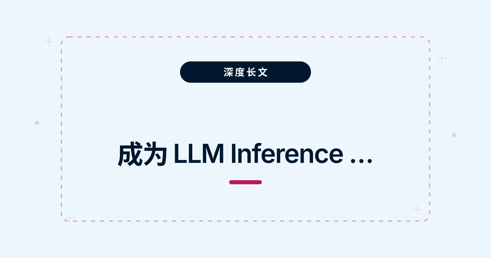
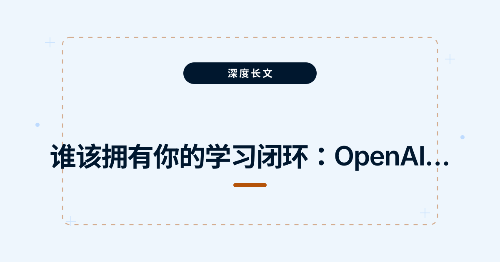
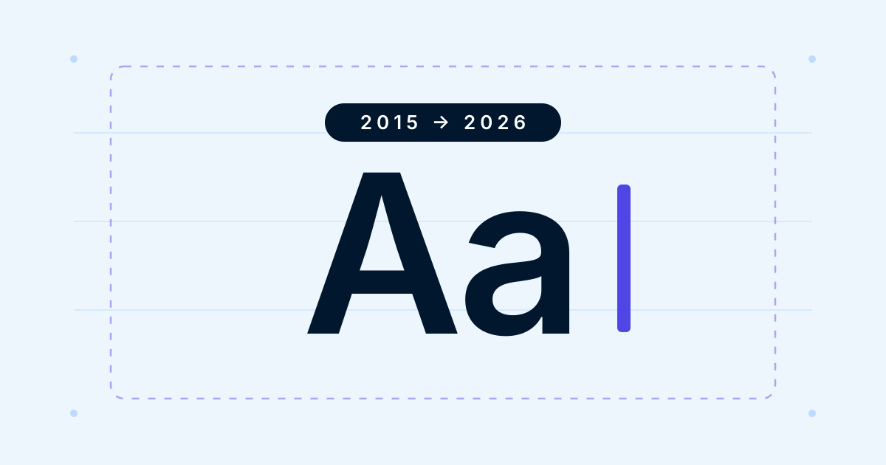
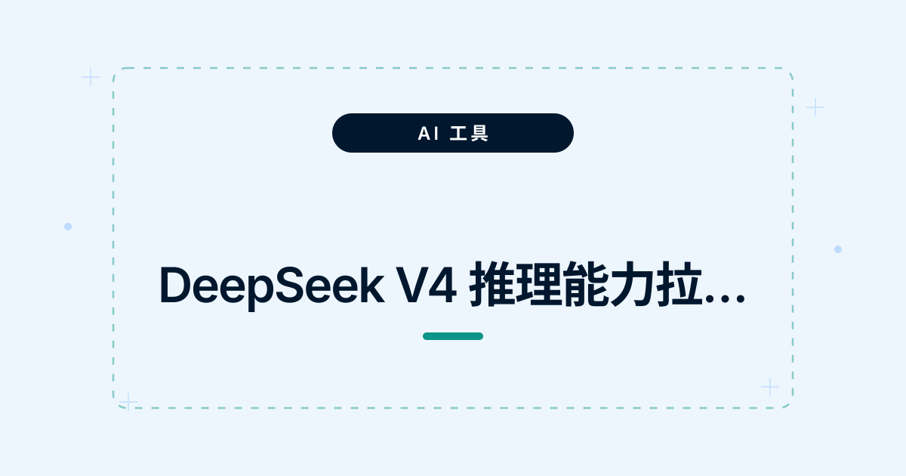
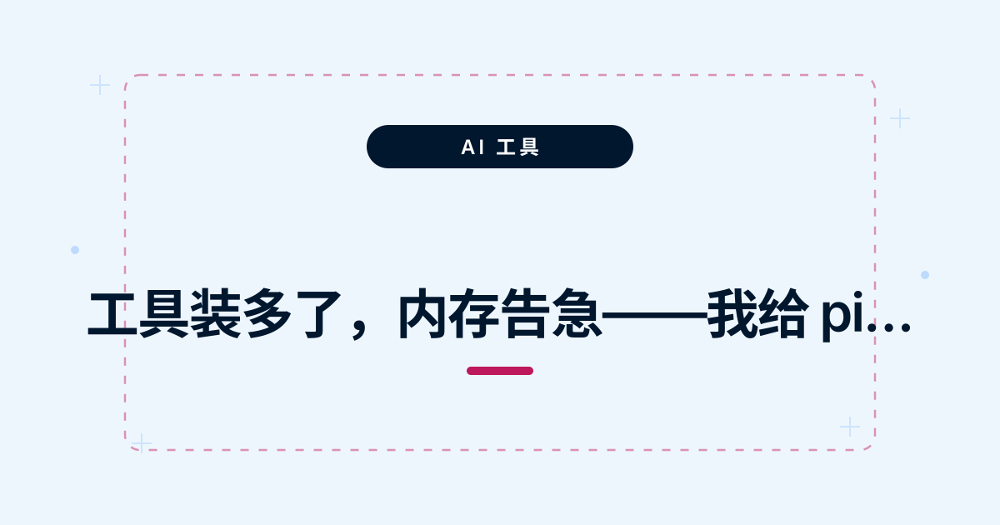

全部文章

成为 LLM Inference Engineer 全景指南（20 篇系列）
从推理生命周期原理讲到生产部署、成本优化与证据体系，再用 34 项技术全图查漏补缺——20 篇讲透 LLM 推理工程的岗位、原理与实战。
把 GPT-Live-1 跑通的最小活样本：HeyGen 仓库逐行拆解
HeyGen 的 liveavatar-gpt-live-demos（MIT）用 GPT-Live-1 驱动实时数字人，开箱是日语家教。clone 下来逐文件精读源码：架构图里的每一根线，在真实代码里长什么样。
他开源了「软件工厂」却不卖钱：一个反共识选择背后的算盘
当所有人都在把 AI coding agent 卖成 SaaS、按席位收费、token 加价转卖，前亚马逊工程师 Cole Murray 偏说这条路走不通，把整套软件工厂开源白送——价值在组织流程，不在基建。
他用 0.05 美元/分钟，反推出 OpenAI 语音模型的整套架构
OpenAI 发了全双工语音模型 GPT-Live-1，官方没公布任何架构细节。一个 NVIDIA 语音研究员只看 API、定价和第三方评测，就把内部结构推了个八九不离十——再用官方原文逐条核验。
语音 agent 为什么比文本 agent 难测 10 倍？CRAWL-WALK-RUN 评测框架全拆解
OpenAI 给 GPT-Live-1 配了开源评测框架，把语音 agent 评估拆成「爬行—行走—奔跑」三档；τ-Voice 论文用 278 个真实任务测出：全双工语音 agent 只保留了文本能力的 30%–45%。

谁该拥有你的学习闭环：OpenAI 用 Codex 10 天降了 15% 转接率，但有个更深的押注
生产会话暴露缺口→Codex 提议修复→团队测试批准→上线：这套闭环和 Cole Murray 开源的 OpenInspect 是同一种架构，区别只在——你租用闭环，还是拥有闭环。
GPT-Live-1 架构图解教程：从全双工音频流到工具调用全流程
用 10 张图逐步拆解 GPT-Live-1 的完整实现架构：音频怎么流进流出、委托怎么发生、工具怎么执行、结果怎么确认说回用户——每一张图对应一个架构层，看完就能动手搭。
4B 小模型怎么追平 70B？FrogNano 的「在线任务合成」标定细节与硬对比
微软 Froggy Team 的 4B coding agent，不蒸馏、只靠 RL 在在线合成的任务上训练，把 SWE-bench Verified 做到 61.5%。往里钻两层：TaskPilot 怎么贴着能力前沿合任务，以及和 SWE-RL、Agent-RLVR 的硬对比。
用 LPDDR 取代 HBM：DeepSeek 4.1 Flash 架构里被所有人忽略的关键细节
舆论都在看跑分，硬件分析师 GDP 指出真正的主角：约 196B 参数的 Engram 嵌入驻留主机内存 LPDDR5，把最贵的 HBM 省了下来。这是中国大模型实验室集体转向的新方向。
训练 64 个 token，外推 1000 倍仍拿 95 分：ICLR 2026 找到了长文本的病根
softmax 必须给每个 token 分一点概率，序列越长越「弥散」；α-entmax 能把无关 token 精确清零。只训 64 长度的模型外推 1000 倍仍拿 95.3%，softmax 跌到 3%。
模型越大，偏见越强：一场颠覆直觉的 AI 基础理论演讲讲了什么
Andrew Gordon Wilson 一个多小时的演讲，开场就让全场 70% 的人选错。Epiplexity（认知复杂度）解释了为什么模型越大越该「挑食」：只啃难而有规律的数据，而不是对所有数据都认真学。
你的 AI Agent 正在偷偷烧钱？搞懂「提示词缓存」，费用直接降 90%
你以为每次提问都要为 5 万 token 的上下文全价买单？其实只要用对缓存：命中部分按一折计费，写对缓存边界、避开动态内容，成本能砍到接近零。
我把 FrontierAgent 做成了 DSH 的插件：零额外密钥 + 8 个踩坑实录
上一篇把 FrontierAgent 装上了 Mac，但它一直是座孤岛。这篇记录把它做成 DSH 插件的全过程——对话框里一条 /frontier 派活，复用当前模型跑完，结果自动回到对话；「能跑」和「跑得对」之间隔着 8 个坑。
「忘记密码」和「登录信息忘了」，大模型为什么知道是一回事？
两句话没有一个词相同，意思却一样——大模型靠的是词嵌入和注意力。用四张图讲清：意义怎么变成向量，注意力怎么打分。
一台电脑同时使用两个 GitHub 账号
用 SSH Host 别名把账号写进 remote URL：给第二个账号配一把专属密钥，推拉代码自动走对应身份，不存在“忘了切换账号”这回事。

重构了这个博客：告别 2015，换上新装
旧站是 2015 年用 Hexo 生成的，停更在 2018 年。这次连根拔起，删掉所有旧文章，手写静态页面重新出发——顺便记录一下新设计是怎么来的。
给 Web 对话框装一个 ↑ 键：我在 DeepSeek Harness 上写「输入历史」插件的完整记录
终端里 ↑ 调出上一条命令是肌肉记忆，Web 对话框里却什么都没有。用纯插件方式补上它：一百来行代码，读穿了半个框架。
为什么 0.1 存不进计算机？我做了个「拆开看」的工具，10 分钟搞懂 FP8
0.1 + 0.2 为什么不等于 0.3？把浮点数拆成三段二进制格子，做了五个可交互的插画，从 IEEE 754 一路看到 FP8。
我在 Mac 上部署了开源 Agent「FrontierAgent」：全程实操 + 7 个踩坑实录
不需要 GPU，不需要 Docker Desktop，一台普通 Mac 就能跑。「能装上」和「装得顺」之间隔着 7 个坑，每一个的现象、根因和解法都在这里。
DSH 远程控制实战：无需 VPS，用 Cloudflare Tunnel 把电脑工作台装进手机
电脑上的 DSH 工作台只听本机，出门在外够不着。用 Cloudflare Named Tunnel 配认证网关：需要时手机扫码访问，不用时一键关闭。
B200 一半时间在等内存：一篇 160 页的 LLM 推理效率教程讲了什么
Alex Smola 的 161 页教程《Efficiency in LLMs》，从芯片讲到 KV 压缩。两个晚上读完，整理成一篇能看完的中文摘要，保留量化直觉和关键结论。
双人播客的视频版，怎么让画面跟着说话人切换
对话视频的镜头该给谁？把主讲者检测接进 pi：检测每段时间谁在说话，自动生成画面切换点，视频版一条流水线出来。
我把声音克隆搭了个网页界面，全程踩坑实录
SeedVC 可以用一段录音换音色、保语气。把模型封装成本地服务搭个网页界面，再接进 pi，配音的中间地带被填上了。
视频里的字幕，我让 AI 自己读出来了
硬字幕烧在画面里，复制不出来。OCR 逐帧提取接进 pi：扔进去一个视频，字幕文本直接回到对话里。
硬盘快满了，我让 AI 帮我找出问题在哪
256GB 的 Mac Mini 用了一年多就报警磁盘不足。做一个硬盘扫描工具接进 pi，让 AI 自己去找大文件和垃圾目录。
我在用一个 AI 助手，它可以随时塞进新工具
工具太散，切换即打断。pi 是一个支持注册自定义工具的 AI agent：写一个 TypeScript 文件放进目录，AI 就知道它的存在——说一句话，什么都能做。
我把本地语音识别接进了 AI 编程助手，全程踩坑实录
把 SenseVoice 本地语音识别模型直接接进 pi 的工具系统：说一句话自动转录，结果回到对话继续加工，敏感内容不过云端。
又往 AI 助手里塞了一个工具：现在它能帮我出小红书配图了
把出图这件事搬进对话窗口：接一个 gpt-image-2 的图片生成工具，写完稿顺手一句话出图，思路不再被打断。
我把声音克隆配音接进了 AI 助手，现在它能直接出视频
口播稿到字幕视频是一条完整流水线：解析稿件、分段合成、对齐时间轴、渲染合并。把它整个接进 pi，压缩成一句话的事。

DeepSeek V4 推理能力拉满，但它是个「睁眼瞎」
推理模型换到 DeepSeek V4 之后，发现它看不见图。给 pi 接上 Qwen3-VL 视觉工具：识图、读截图、看 UI，让 agent 重新睁开眼。

工具装多了，内存告急——我给 pi 加了个「管家」
本地模型一个比一个大，全开机内存直接打满。做一个后台服务调度工具：AI 按需拉起、用完即停，内存交给管家管。
没有匹配的文章，换个关键词试试。